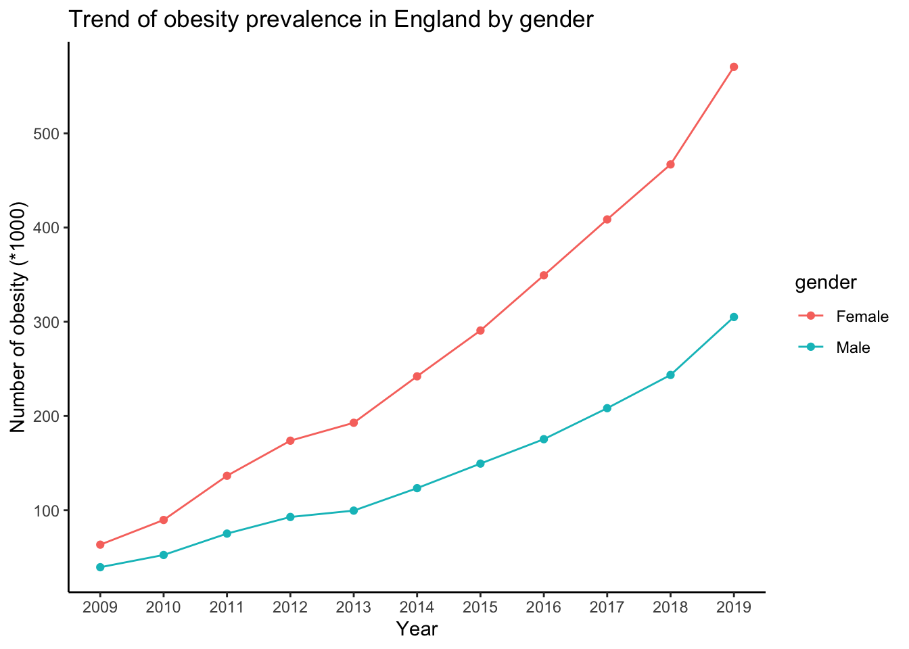
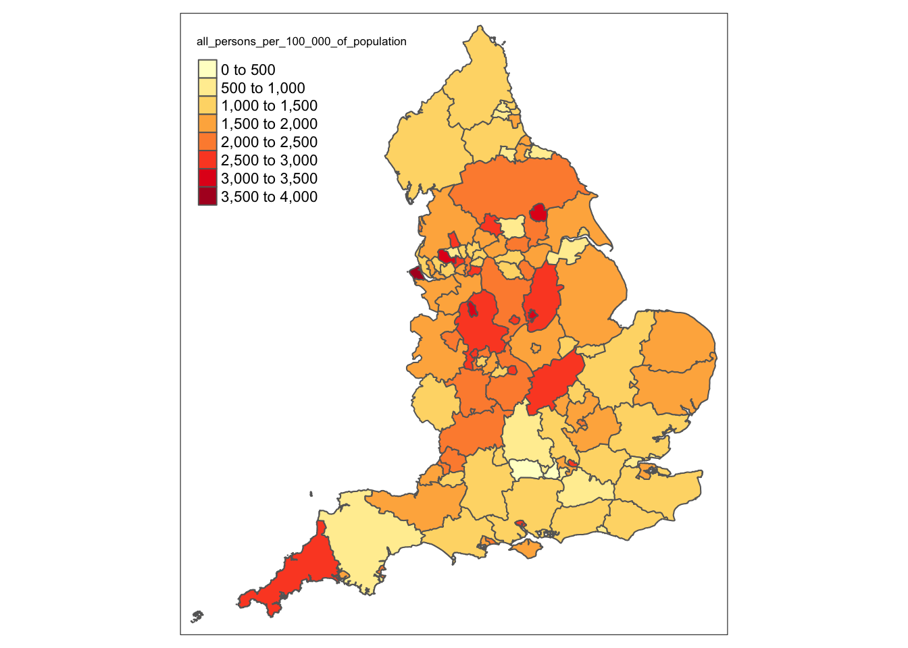
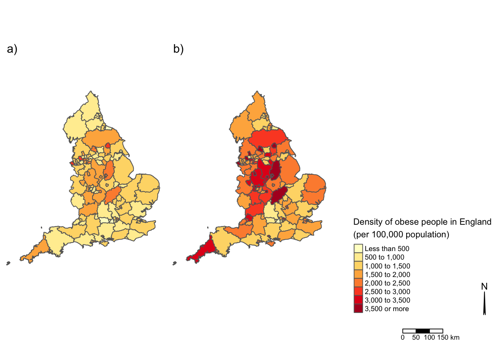
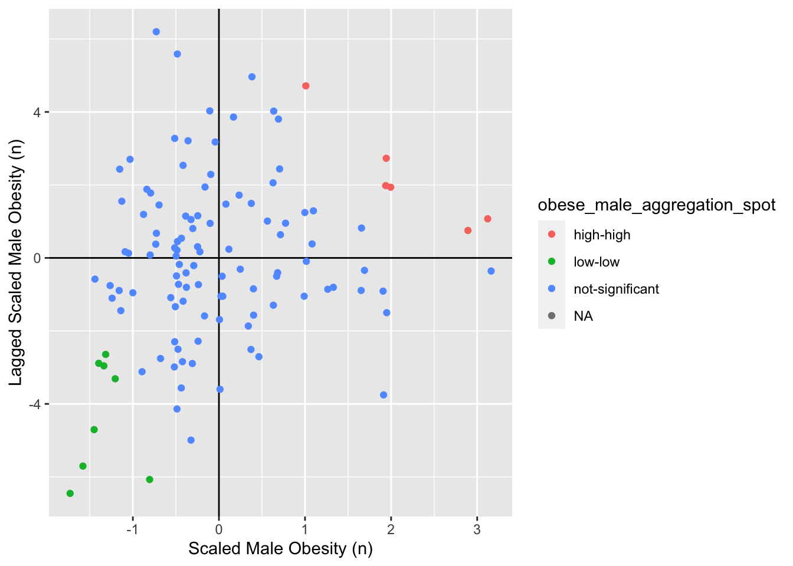
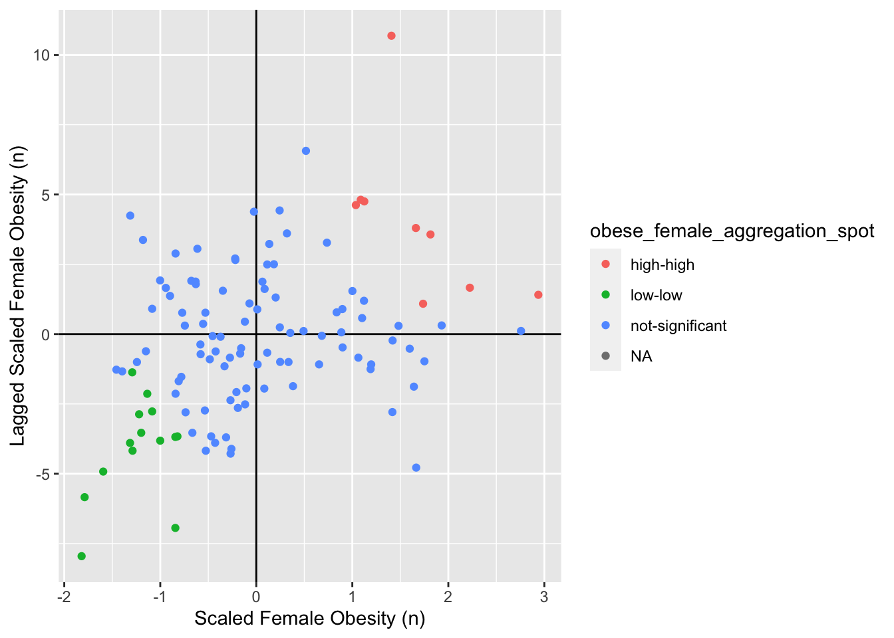
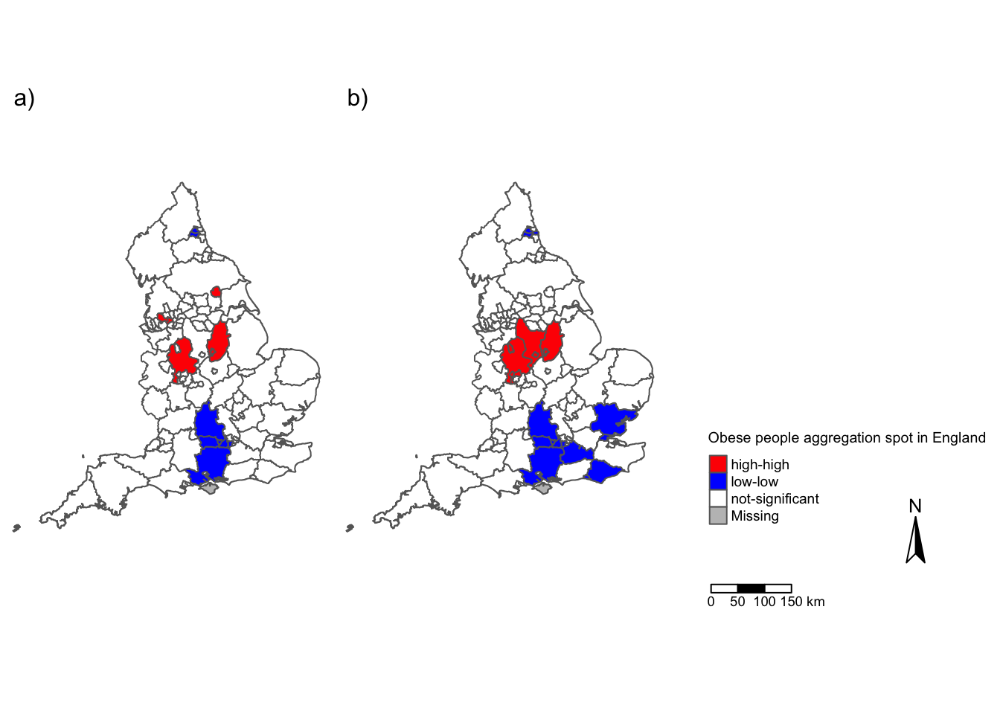
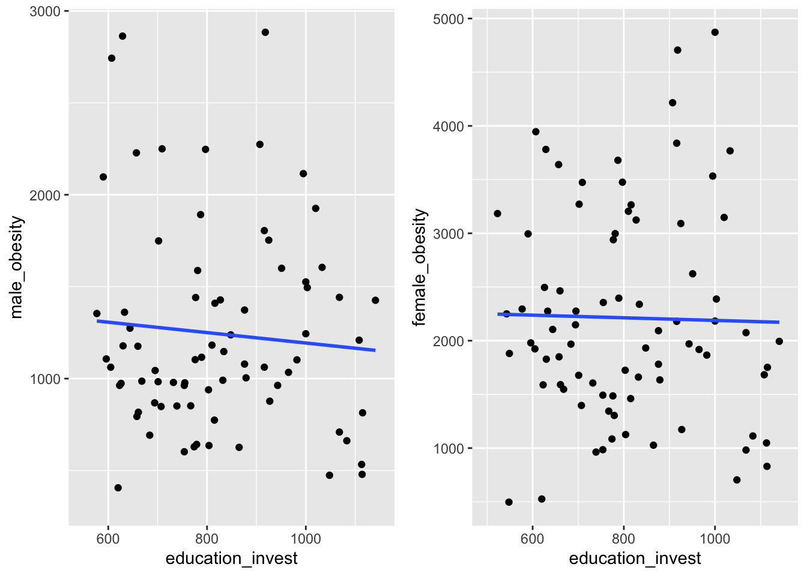
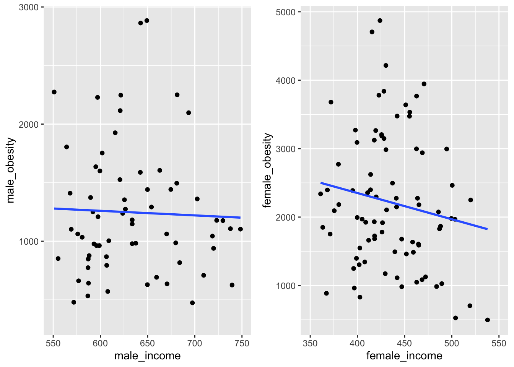
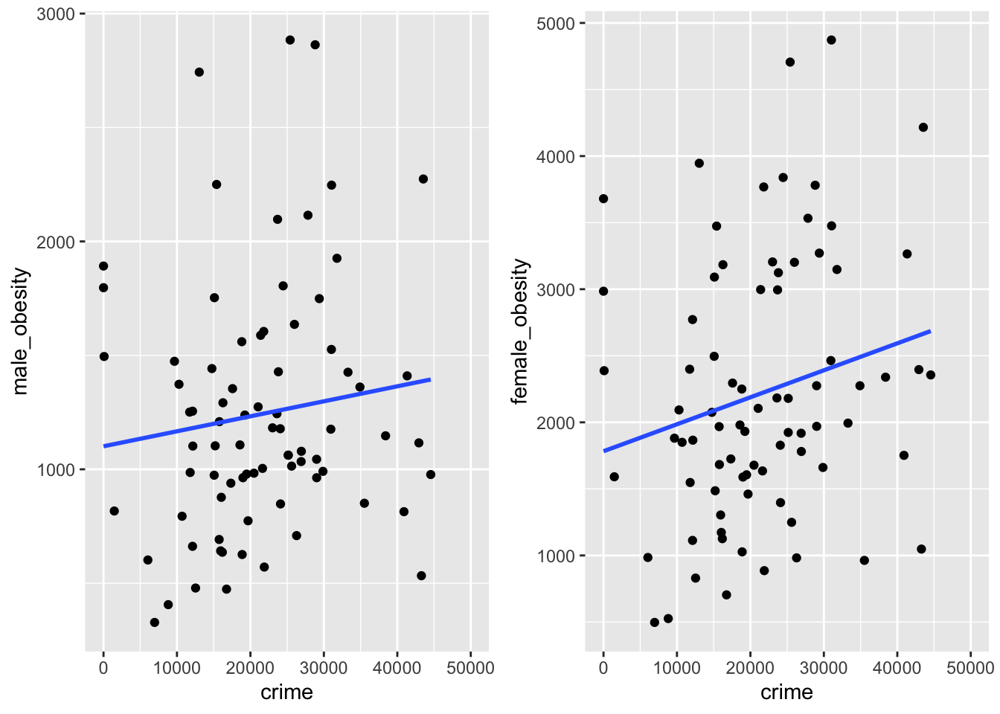

library(sp)
library(maptools)## Checking rgeos availability: TRUElibrary(tmap)
library(sf)## Linking to GEOS 3.8.1, GDAL 3.2.0, PROJ 7.2.0library(tmaptools)
library(tidyverse)## ── Attaching packages ─────────────────────────────────────── tidyverse 1.3.0 ──## ✓ ggplot2 3.3.2 ✓ purrr 0.3.4
## ✓ tibble 3.0.4 ✓ dplyr 1.0.2
## ✓ tidyr 1.1.2 ✓ stringr 1.4.0
## ✓ readr 1.4.0 ✓ forcats 0.5.0## ── Conflicts ────────────────────────────────────────── tidyverse_conflicts() ──
## x dplyr::filter() masks stats::filter()
## x dplyr::lag() masks stats::lag()library(janitor)##
## Attaching package: 'janitor'## The following objects are masked from 'package:stats':
##
## chisq.test, fisher.testlibrary(spdep)## Loading required package: spData## To access larger datasets in this package, install the spDataLarge
## package with: `install.packages('spDataLarge',
## repos='https://nowosad.github.io/drat/', type='source')`library(spatstat)## Loading required package: spatstat.data## Loading required package: nlme##
## Attaching package: 'nlme'## The following object is masked from 'package:dplyr':
##
## collapse## Loading required package: rpart## Registered S3 method overwritten by 'spatstat':
## method from
## print.boxx cli##
## spatstat 1.64-1 (nickname: 'Help you I can, yes!')
## For an introduction to spatstat, type 'beginner'##
## Note: spatstat version 1.64-1 is out of date by more than a year; we strongly recommend upgrading to the latest version.library(plyr)## ------------------------------------------------------------------------------## You have loaded plyr after dplyr - this is likely to cause problems.
## If you need functions from both plyr and dplyr, please load plyr first, then dplyr:
## library(plyr); library(dplyr)## ------------------------------------------------------------------------------##
## Attaching package: 'plyr'## The following objects are masked from 'package:dplyr':
##
## arrange, count, desc, failwith, id, mutate, rename, summarise,
## summarize## The following object is masked from 'package:purrr':
##
## compactlibrary(stats)
library(corrr)
library(car)## Loading required package: carData##
## Attaching package: 'car'## The following objects are masked from 'package:spatstat':
##
## bc, ellipse## The following object is masked from 'package:dplyr':
##
## recode## The following object is masked from 'package:purrr':
##
## somelibrary(tidymodels)## ── Attaching packages ────────────────────────────────────── tidymodels 0.1.2 ──## ✓ broom 0.7.2 ✓ recipes 0.1.15
## ✓ dials 0.0.9 ✓ rsample 0.0.8
## ✓ infer 0.5.3 ✓ tune 0.1.2
## ✓ modeldata 0.1.0 ✓ workflows 0.2.1
## ✓ parsnip 0.1.4 ✓ yardstick 0.0.7## ── Conflicts ───────────────────────────────────────── tidymodels_conflicts() ──
## x plyr::arrange() masks dplyr::arrange()
## x nlme::collapse() masks dplyr::collapse()
## x plyr::compact() masks purrr::compact()
## x plyr::count() masks dplyr::count()
## x scales::discard() masks purrr::discard()
## x plyr::failwith() masks dplyr::failwith()
## x dplyr::filter() masks stats::filter()
## x recipes::fixed() masks stringr::fixed()
## x plyr::id() masks dplyr::id()
## x dplyr::lag() masks stats::lag()
## x plyr::mutate() masks dplyr::mutate()
## x tune::parameters() masks dials::parameters(), spatstat::parameters()
## x dials::prune() masks rpart::prune()
## x car::recode() masks dplyr::recode()
## x plyr::rename() masks dplyr::rename()
## x car::some() masks purrr::some()
## x yardstick::spec() masks readr::spec()
## x recipes::step() masks stats::step()
## x plyr::summarise() masks dplyr::summarise()
## x plyr::summarize() masks dplyr::summarize()library(ggplot2)
library(RColorBrewer)
library(Rmisc)## Loading required package: lattice##
## Attaching package: 'lattice'## The following object is masked from 'package:spatstat':
##
## panel.histogramThe applied Obesity Dataset is from NHS Digital (2020), called statistics on obesity in England, covering the obesity cases classified by hospitals from 2009 to 2019. The observations have been clearly organized based on gender and local authorities of England. https://digital.nhs.uk/data-and-information/publications/statistical/statistics-on-obesity-physical-activity-and-diet/england-2020/data-tables
obesity_gender <- read_csv("datasets/obesity_gender_england.csv")## Warning: Missing column names filled in: 'X2' [2]##
## ── Column specification ────────────────────────────────────────────────────────
## cols(
## Year = col_character(),
## X2 = col_logical(),
## `All persons` = col_number(),
## Male = col_number(),
## Female = col_number()
## )obesity_gender$year = c(2009:2019)
obesity <- read_csv("datasets/obesity_england.csv")## Warning: Missing column names filled in: 'X2' [2], 'X3' [3], 'X7' [7]##
## ── Column specification ────────────────────────────────────────────────────────
## cols(
## `Region and LA of residence` = col_character(),
## X2 = col_logical(),
## X3 = col_character(),
## `All persons` = col_number(),
## Male = col_number(),
## Female = col_number(),
## X7 = col_logical(),
## `All persons per 100,000 of population` = col_number(),
## `Male per 100,000 of population` = col_number(),
## `Female per 100,000 of population` = col_number()
## )summary(obesity)## Region and LA of residence X2 X3 All persons
## Length:172 Mode:logical Length:172 Min. : 45
## Class :character NA's:172 Class :character 1st Qu.: 2660
## Mode :character Mode :character Median : 4270
## Mean : 16213
## 3rd Qu.: 7964
## Max. :875663
## NA's :10
## Male Female X7
## Min. : 20.0 Min. : 25 Mode:logical
## 1st Qu.: 952.5 1st Qu.: 1681 NA's:172
## Median : 1420.0 Median : 2822
## Mean : 5647.7 Mean : 10565
## 3rd Qu.: 2721.2 3rd Qu.: 5468
## Max. :305073.0 Max. :570568
## NA's :10 NA's :10
## All persons per 100,000 of population Male per 100,000 of population
## Min. : 413 Min. : 328.0
## 1st Qu.:1180 1st Qu.: 888.8
## Median :1512 Median :1076.5
## Mean :1641 Mean :1205.8
## 3rd Qu.:2079 3rd Qu.:1439.2
## Max. :3804 Max. :2884.0
## NA's :10 NA's :10
## Female per 100,000 of population
## Min. : 497
## 1st Qu.:1450
## Median :1928
## Mean :2081
## 3rd Qu.:2598
## Max. :4872
## NA's :10Other sociodemographic datasets have also been sourced from Office of National Statistics, including crime and justice dataset (Office of National Statistics, 2019), gross disposable household income dataset (Office of National Statistics, 2018), and school expenditure dataset (GOV.UK, 2019).
School expenditure dataset: How schools and local authorities spent their funding on education, children’s services and social care in the financial year 2018 to 2019. https://www.gov.uk/government/statistics/la-and-school-expenditure-2018-to-2019-financial-year
eduinves <- read_csv("datasets/education_investment.csv") %>%
select(., c(1, 7)) %>%
clean_names()## Warning: Missing column names filled in: 'X2' [2], 'X3' [3], 'X4' [4]##
## ── Column specification ────────────────────────────────────────────────────────
## cols(
## `LA Code` = col_character(),
## X2 = col_double(),
## X3 = col_character(),
## X4 = col_logical(),
## `Children's and young people's services £000s` = col_number(),
## `Pupil / Population Count` = col_number(),
## `Spend per Capita (£)` = col_number()
## )Gross disposable household income (GDHI): allocated to UK local authorities including property income, social benefits and primary and secondary income. https://www.ons.gov.uk/economy/regionalaccounts/grossdisposablehouseholdincome/datasets/regionalgrossdisposablehouseholdincomegdhibylocalauthorityintheuk
Here, the research only use the weekly income speedsheet for men and women.
income_male <- read_csv("datasets/income_male.csv") %>%
select(., c(2, 6))## Warning: Duplicated column names deduplicated: 'change' => 'change_1' [7]##
## ── Column specification ────────────────────────────────────────────────────────
## cols(
## Description = col_character(),
## Code = col_character(),
## `(thousand)` = col_character(),
## Median = col_character(),
## change = col_double(),
## Mean = col_number(),
## change_1 = col_double(),
## `10` = col_character(),
## `20` = col_character(),
## `25` = col_character(),
## `30` = col_character(),
## `40` = col_character(),
## `60` = col_character(),
## `70` = col_character(),
## `75` = col_character(),
## `80` = col_character(),
## `90` = col_character()
## )income_female <- read_csv("datasets/income_female.csv") %>%
select(., c(2, 6))## Warning: Duplicated column names deduplicated: 'change' => 'change_1' [7]##
## ── Column specification ────────────────────────────────────────────────────────
## cols(
## Description = col_character(),
## Code = col_character(),
## `(thousand)` = col_character(),
## Median = col_character(),
## change = col_double(),
## Mean = col_double(),
## change_1 = col_double(),
## `10` = col_character(),
## `20` = col_character(),
## `25` = col_character(),
## `30` = col_character(),
## `40` = col_character(),
## `60` = col_character(),
## `70` = col_character(),
## `75` = col_character(),
## `80` = col_character(),
## `90` = col_character()
## )summary(income_male)## Code Mean
## Length:418 Min. : 432.0
## Class :character 1st Qu.: 593.5
## Mode :character Median : 649.5
## Mean : 675.2
## 3rd Qu.: 729.3
## Max. :1523.8summary(income_female)## Code Mean
## Length:418 Min. :314.6
## Class :character 1st Qu.:413.3
## Mode :character Median :446.9
## Mean :462.5
## 3rd Qu.:495.4
## Max. :941.9Crime and justice dataset: Recorded crime figures for Community Safety Partnerships which equates in the majority of instances to local authorities . The data are rolling 12 month totals, with data points shown at the end of each financial year between year ending March 2003 and year ending March 2007 and at the end of each quarter from June 2007. The data cover local authority boundaries from April 2009 onwards and local authority area names correspond to Community Safety Partnership areas. https://www.ons.gov.uk/peoplepopulationandcommunity/crimeandjustice/datasets/recordedcrimedataatcommunitysafetypartnershiplocalauthoritylevel
Translation of area code of Community Safety Partnerships to GSS_CODE https://geoportal.statistics.gov.uk/datasets/local-authority-district-to-community-safety-partnerships-to-police-force-areas-january-2017-lookup-in-england-and-wales-version-2/data
# code translation
code <- read_csv("datasets/code.csv") %>%
select(., c(1, 3)) %>%
clean_names()##
## ── Column specification ────────────────────────────────────────────────────────
## cols(
## LAD17CD = col_character(),
## LAD17NM = col_character(),
## CSP17CD = col_character(),
## CSP17NM = col_character(),
## PFA17CD = col_character(),
## PFA17NM = col_character(),
## FID = col_double()
## )crime <- read_csv("datasets/crime.csv") ##
## ── Column specification ────────────────────────────────────────────────────────
## cols(
## `12 months ending` = col_character(),
## CSP = col_character(),
## `ONS Code` = col_character(),
## `Police Force Area` = col_character(),
## Region = col_character(),
## Offence = col_character(),
## `Rolling year total number of offences` = col_double()
## )crime <- crime %>%
filter(.$`12 months ending`=="31/12/2018") %>%
select(., c(3, 6, 7)) %>%
clean_names()
crime <- crime[!is.na(crime$ons_code),]
crime <- crime %>%
pivot_wider(id_cols = 1,
names_from = offence,
values_from = rolling_year_total_number_of_offences) type <- crime %>%
summarise_all(class) %>%
pivot_longer(everything(),
names_to="all_variables",
values_to="variable_class")
type## # A tibble: 22 x 2
## all_variables variable_class
## <chr> <chr>
## 1 ons_code character
## 2 All other theft offences numeric
## 3 Bicycle theft numeric
## 4 Criminal damage and arson numeric
## 5 Death or serious injury caused by illegal driving numeric
## 6 Domestic burglary numeric
## 7 Drug offences numeric
## 8 Homicide numeric
## 9 Miscellaneous crimes against society numeric
## 10 Non-domestic burglary numeric
## # … with 12 more rowscrime[is.na(crime)] <- 0
crime$sum = rowSums(crime[,2:22])
crime <- crime %>%
select(.,c(1, 23)) %>%
left_join(., code,
by = c("ons_code" = "csp17cd"))##plot temporal change of obesity in male and female
obesity_gender <- obesity_gender %>%
select(., c(4, 5, 6)) %>%
pivot_longer(.,cols = 1:2,
names_to = "gender",
values_to = "count") %>%
clean_names()ggplot(data = obesity_gender, mapping = aes(x = year, y = count, group = gender)) +
geom_line(aes(color = gender))+
geom_point(aes(color = gender))+
xlab("Year")+
ylab("Number of obesity (*1000)")+
scale_x_continuous(breaks = seq(2009, 2019, by = 1))+
scale_y_continuous(labels = function(y) y / 1000)+
ggtitle("Trend of obesity prevalence in England by gender")+
theme(axis.title = element_text(size=18),axis.text = element_text(size=16),
strip.text = element_text(size=18))+
theme_classic()  The dataset witnesses the increasing trends of obesity prevalence in England for males and female, and the growing gap between them.
ggsave("pic/obesity trend by gender.jpg", width = 7, height = 4)la <- st_read("datasets/gadm36_GBR_shp/gadm36_GBR_2.shp") %>%
st_transform(., 27700) %>%
clean_names()## Reading layer `gadm36_GBR_2' from data source `/Users/huoanni/OneDrive - University College London/Module assessment/GEOG0114_CW1/assessment0114/datasets/gadm36_GBR_shp/gadm36_GBR_2.shp' using driver `ESRI Shapefile'
## Simple feature collection with 183 features and 13 fields
## geometry type: MULTIPOLYGON
## dimension: XY
## bbox: xmin: -13.69139 ymin: 49.86542 xmax: 1.764168 ymax: 61.52708
## geographic CRS: WGS 84unique(la$name_1)## [1] "England" "Northern Ireland" "Scotland" "Wales"england_la <- la[la$name_1=="England",]%>%
select(., c(6, 7, 14)) england_obesity <- england_la %>%
left_join(., obesity,
by=c("name_2"="X3")) %>%
select(., c(2, 3, 5, 6, 7, 9, 10, 11, 12)) %>%
clean_names()colnames(england_obesity)## [1] "name_2"
## [2] "region_and_la_of_residence"
## [3] "all_persons"
## [4] "male"
## [5] "female"
## [6] "all_persons_per_100_000_of_population"
## [7] "male_per_100_000_of_population"
## [8] "female_per_100_000_of_population"
## [9] "geometry"# tmap to observe overall condition
tm_shape(england_obesity) +
tm_polygons("all_persons_per_100_000_of_population",
palette=RColorBrewer::brewer.pal(8, "YlOrRd"),
midpoint=NA)
To avoid the influence of sparsely populated rural areas, the statistics of obesity density is calculated by dividing obese cases by population.
densityfun <- function(datasets, colname, number, mode){
tmap_mode(mode)
breaks = c(-Inf, 500, 1000, 1500, 2000, 2500, 3000, 3500, +Inf)
tm <- tm_shape(datasets) +
tm_polygons(colname,
breaks=breaks,
palette=RColorBrewer::brewer.pal(8, "YlOrRd"),
midpoint=NA) +
tm_legend(show=FALSE)+
tm_layout(frame=FALSE)+
tm_credits(number, position=c(0,0.85), size=1)
return(tm)
}legendfun <- function(datasets, colname){
breaks = c(-Inf, 500, 1000, 1500, 2000, 2500, 3000, 3500, +Inf)
legend <- tm_shape(datasets) +
tm_polygons(colname,
breaks=breaks,
palette=RColorBrewer::brewer.pal(8, "YlOrRd"),
title="Density of obese people in England \n(per 100,000 population)") +
tm_scale_bar(position=c(0.4, 0.01), text.size=0.6)+
tm_compass(north=0, position=c(0.95, 0.1))+
tm_layout(title = "Obese Population Density Comparison",
legend.title.size=1,
legend.text.size = 0.6,
legend.only = TRUE,
legend.position=c(0.1,0.1),asp=0.1)
return(legend)
}tm1 <- densityfun(england_obesity, "male_per_100_000_of_population","a)", "plot")## tmap mode set to plottingtm2 <- densityfun(england_obesity, "female_per_100_000_of_population","b)", "plot")## tmap mode set to plottinglegend <- legendfun(england_obesity,"male_per_100_000_of_population")
t_density <- tmap_arrange(tm1, tm2, legend, ncol=3)
t_density ### save obese population density mapping
tmap_save(t_density, 'pic/obese population density.png', width=7, height=3)## Map saved to /Users/huoanni/OneDrive - University College London/Module assessment/GEOG0114_CW1/assessment0114/pic/obese population density.png## Resolution: 2100 by 900 pixels## Size: 7 by 3 inches (300 dpi)Global Moran’s I statistics, as a global spatial autocorrelation measurement for spatial terms, is used to examine whether obesity phenomena were dispersed, random or clustered.
# check the current class
class(england_obesity)## [1] "sf" "data.frame"# convert it to sp
england_obesity_sp <- as_Spatial(england_obesity, IDs=england_obesity$region_and_la_of_residence)## Warning in showSRID(uprojargs, format = "PROJ", multiline = "NO", prefer_proj
## = prefer_proj): Discarded datum Unknown based on Airy 1830 ellipsoid in CRS
## definition## Warning in showSRID(SRS_string, format = "PROJ", multiline = "NO", prefer_proj =
## prefer_proj): Discarded datum OSGB 1936 in CRS definition# check the class of the new object
class(england_obesity_sp)## [1] "SpatialPolygonsDataFrame"
## attr(,"package")
## [1] "sp"# make the nb
england_obesity_nb <- poly2nb(england_obesity_sp, row.names=england_obesity_sp$region_and_la_of_residence)# create the list weights object
nb_weights_list <- nb2listw(england_obesity_nb, style='B',
zero.policy = TRUE)moran(england_obesity$male_per_100_000_of_population,
nb_weights_list,
n=length(nb_weights_list$neighbours),
S0=Szero(nb_weights_list),
zero.policy = TRUE)## $I
## [1] 0.1161155
##
## $K
## [1] 3.847276mc_model1 <- moran.mc(england_obesity_sp$male_per_100_000_of_population, nb_weights_list, nsim=999,zero.policy = TRUE)
mc_model1##
## Monte-Carlo simulation of Moran I
##
## data: england_obesity_sp$male_per_100_000_of_population
## weights: nb_weights_list
## number of simulations + 1: 1000
##
## statistic = 0.11415, observed rank = 975, p-value = 0.025
## alternative hypothesis: greatermoran(england_obesity$female_per_100_000_of_population,
nb_weights_list,
n=length(nb_weights_list$neighbours),
S0=Szero(nb_weights_list),
zero.policy = TRUE)## $I
## [1] 0.2219553
##
## $K
## [1] 2.882281mc_model2 <- moran.mc(england_obesity_sp$female_per_100_000_of_population, nb_weights_list, nsim=999,zero.policy = TRUE)
mc_model2##
## Monte-Carlo simulation of Moran I
##
## data: england_obesity_sp$female_per_100_000_of_population
## weights: nb_weights_list
## number of simulations + 1: 1000
##
## statistic = 0.21819, observed rank = 1000, p-value = 0.001
## alternative hypothesis: greaterThen, use the Local Moran’s I for obese male and female groups to identify specific spatial pattern for obesity at local authority level.
# rescale that variable!
england_obesity_sp$scale_male_per_100_000_of_population <- scale(england_obesity_sp$male_per_100_000_of_population)
# create a spatial lag variable and save it to a new column
england_obesity_sp$lag_scale_male <- lag.listw(nb_weights_list, england_obesity_sp$scale_male_per_100_000_of_population)## Warning in lag.listw(nb_weights_list,
## england_obesity_sp$scale_male_per_100_000_of_population): NAs in lagged valuesengland_obesity_moran_stats <- st_as_sf(england_obesity_sp)
local_moran <- localmoran(england_obesity_sp$male_per_100_000_of_population, nb_weights_list)## Warning in lag.listw(listw, z, zero.policy = zero.policy, NAOK = NAOK): NAs in
## lagged valuessig_level <- 0.1
# version with significance value
england_obesity_moran_stats$obese_male_aggregation_spot <- ifelse(england_obesity_moran_stats$scale_male_per_100_000_of_population > 0 &
england_obesity_moran_stats$lag_scale_male > 0 &
local_moran[,5] <= sig_level,
"high-high",
ifelse(england_obesity_moran_stats$scale_male_per_100_000_of_population <= 0 &
england_obesity_moran_stats$lag_scale_male <= 0 &
local_moran[,5] <= sig_level,
"low-low",
ifelse(england_obesity_moran_stats$scale_male_per_100_000_of_population > 0 &
england_obesity_moran_stats$lag_scale_male <= 0 &
local_moran[,5] <= sig_level,
"high-low",
ifelse(england_obesity_moran_stats$scale_male_per_100_000_of_population <= 0 &
england_obesity_moran_stats$lag_scale_male > 0 &
local_moran[,5] <= sig_level,
"low-high",
ifelse(local_moran[,5] > sig_level,
"not-significant",
"not-significant")))))# plot the results nnw with the satistical significance
ggplot(england_obesity_moran_stats,
aes(x = scale_male_per_100_000_of_population,
y = lag_scale_male,
color = obese_male_aggregation_spot)) +
geom_vline(xintercept = 0) + # plot vertical line
geom_hline(yintercept = 0) + # plot horizontal line
xlab("Scaled Male Obesity (n)") +
ylab("Lagged Scaled Male Obesity (n)") +
labs(colour="obese_male_aggregation_spot") +
geom_point()## Warning: Removed 2 rows containing missing values (geom_point).
tmap_mode("plot")## tmap mode set to plottingt1 <- tm_shape(england_obesity_moran_stats) +
tm_polygons("obese_male_aggregation_spot",
palette=c("red", "blue", "white", "grey"))+
tm_legend(show=FALSE)+
tm_layout(frame=FALSE)+
tm_credits("a)", position=c(0,0.85), size=1)# rescale that variable!
england_obesity_sp$scale_female_per_100_000_of_population <- scale(england_obesity_sp$female_per_100_000_of_population)
# create a spatial lag variable and save it to a new column
england_obesity_sp$lag_scale_female <- lag.listw(nb_weights_list, england_obesity_sp$scale_female_per_100_000_of_population)## Warning in lag.listw(nb_weights_list,
## england_obesity_sp$scale_female_per_100_000_of_population): NAs in lagged valuesengland_obesity_moran_stats <- st_as_sf(england_obesity_sp)
local_moran <- localmoran(england_obesity_sp$female_per_100_000_of_population, nb_weights_list)## Warning in lag.listw(listw, z, zero.policy = zero.policy, NAOK = NAOK): NAs in
## lagged valuessig_level <- 0.1
# version with significance value
england_obesity_moran_stats$obese_female_aggregation_spot <- ifelse(england_obesity_moran_stats$scale_female_per_100_000_of_population > 0 &
england_obesity_moran_stats$lag_scale_female > 0 &
local_moran[,5] <= sig_level,
"high-high",
ifelse(england_obesity_moran_stats$scale_female_per_100_000_of_population <= 0 &
england_obesity_moran_stats$lag_scale_female <= 0 &
local_moran[,5] <= sig_level,
"low-low",
ifelse(england_obesity_moran_stats$scale_female_per_100_000_of_population > 0 &
england_obesity_moran_stats$lag_scale_female <= 0 &
local_moran[,5] <= sig_level,
"high-low",
ifelse(england_obesity_moran_stats$scale_female_per_100_000_of_population <= 0 &
england_obesity_moran_stats$lag_scale_female > 0 &
local_moran[,5] <= sig_level,
"low-high",
ifelse(local_moran[,5] > sig_level,
"not-significant",
"not-significant")))))# plot the results nnw with the satistical significance
ggplot(england_obesity_moran_stats,
aes(x = scale_female_per_100_000_of_population,
y = lag_scale_female,
color = obese_female_aggregation_spot)) +
geom_vline(xintercept = 0) + # plot vertical line
geom_hline(yintercept = 0) + # plot horizontal line
xlab("Scaled Female Obesity (n)") +
ylab("Lagged Scaled Female Obesity (n)") +
labs(colour="obese_female_aggregation_spot") +
geom_point()## Warning: Removed 2 rows containing missing values (geom_point).
tmap_mode("plot")## tmap mode set to plottingt2 <- tm_shape(england_obesity_moran_stats) +
tm_polygons("obese_female_aggregation_spot",
palette=c("red", "blue", "white", "grey"))+
tm_legend(show=FALSE)+
tm_layout(frame=FALSE)+
tm_credits("b)", position=c(0,0.85), size=1)legend <- tm_shape(england_obesity_moran_stats) +
tm_polygons("obese_female_aggregation_spot",
palette=c("red", "blue", "white", "grey"),
title="Obese people aggregation spot in England") +
tm_scale_bar(position=c(0.1,0.12), text.size=0.6)+
tm_compass(north=0, position=c(0.65,0.2))+
tm_layout(title = "Obesity spatial autocorrelation",
legend.title.size=1,
legend.text.size = 0.6,
legend.only = TRUE,
legend.position=c(0.1,0.25),asp=0.1)tmap_mode("plot")## tmap mode set to plottinglocal_moran <- tmap_arrange(t1, t2, legend, ncol=3)
local_moran
tmap_save(local_moran, "pic/Local Moran's I, Obesity in England.png",width=7, height=4)## Map saved to /Users/huoanni/OneDrive - University College London/Module assessment/GEOG0114_CW1/assessment0114/pic/Local Moran's I, Obesity in England.png## Resolution: 2100 by 1200 pixels## Size: 7 by 4 inches (300 dpi)obesityfactor <- england_obesity %>%
left_join(., eduinves,
by = c("region_and_la_of_residence" = "la_code")) %>%
left_join(., income_male,
by = c ("region_and_la_of_residence" = "Code")) %>%
left_join(., income_female,
by = c ("region_and_la_of_residence" = "Code")) %>%
left_join(., crime,
by = c ("region_and_la_of_residence" = "lad17cd")) %>%
select(., c(2, 7, 8, 9, 10, 11, 13))colnames(obesityfactor) = c("code","male_obesity","female_obesity","education_invest",
"male_income","female_income","crime", "geometry")obesityfactor <- obesityfactor[!is.na(obesityfactor$male_obesity)&
!is.na(obesityfactor$female_obesity)&
!is.na(obesityfactor$education_invest)&
!is.na(obesityfactor$male_income)&
!is.na(obesityfactor$female_income)&
!is.na(obesityfactor$crime)&
!is.na(obesityfactor$crime),]colnames(obesityfactor)## [1] "code" "male_obesity" "female_obesity" "education_invest"
## [5] "male_income" "female_income" "crime" "geometry"During the process, outliers could be figured out and removed.
q1 <- qplot(x = `education_invest`,
y = `male_obesity`,
data=obesityfactor,
xlim = c(550, 1150))
qem <- q1 + stat_smooth(method="lm", se=FALSE, size=1) q2 <- qplot(x = `education_invest`,
y = `female_obesity`,
data=obesityfactor,
xlim = c(500, 1150))
qef <- q2 + stat_smooth(method="lm", se=FALSE, size=1) q3 <- qplot(x = `male_income`,
y = `male_obesity`,
data=obesityfactor,
xlim = c(550, 750))
qim <- q3 + stat_smooth(method="lm", se=FALSE, size=1) q4 <- qplot(x = `female_income`,
y = `female_obesity`,
data=obesityfactor,
xlim = c(350, 550))
qif <- q4 + stat_smooth(method="lm", se=FALSE, size=1) q5 <- qplot(x = `crime`,
y = `male_obesity`,
data=obesityfactor,
xlim = c(0, 50000))
qcm <- q5 + stat_smooth(method="lm", se=FALSE, size=1) q6 <- qplot(x = `crime`,
y = `female_obesity`,
data=obesityfactor,
xlim = c(0, 50000))
qcf <- q6 + stat_smooth(method="lm", se=FALSE, size=1) multiplot(qem, qef, cols = 2)## `geom_smooth()` using formula 'y ~ x'## Warning: Removed 10 rows containing non-finite values (stat_smooth).## Warning: Removed 10 rows containing missing values (geom_point).## `geom_smooth()` using formula 'y ~ x'## Warning: Removed 6 rows containing non-finite values (stat_smooth).## Warning: Removed 6 rows containing missing values (geom_point).
multiplot(qim, qif, cols = 2)## `geom_smooth()` using formula 'y ~ x'## Warning: Removed 21 rows containing non-finite values (stat_smooth).## Warning: Removed 21 rows containing missing values (geom_point).## `geom_smooth()` using formula 'y ~ x'## Warning: Removed 3 rows containing non-finite values (stat_smooth).## Warning: Removed 3 rows containing missing values (geom_point).
multiplot(qcm, qcf, cols = 2)## `geom_smooth()` using formula 'y ~ x'## Warning: Removed 7 rows containing non-finite values (stat_smooth).## Warning: Removed 7 rows containing missing values (geom_point).## `geom_smooth()` using formula 'y ~ x'## Warning: Removed 7 rows containing non-finite values (stat_smooth).
## Warning: Removed 7 rows containing missing values (geom_point).
type <- obesityfactor %>%
st_drop_geometry() %>%
summarise_all(class) %>%
pivot_longer(everything(),
names_to="all_variables",
values_to="variable_class")
type## # A tibble: 7 x 2
## all_variables variable_class
## <chr> <chr>
## 1 code character
## 2 male_obesity numeric
## 3 female_obesity numeric
## 4 education_invest numeric
## 5 male_income numeric
## 6 female_income numeric
## 7 crime numericobesityfactorfilter <- obesityfactor %>%
filter(education_invest>=500&
education_invest<=1150&
male_income>=550&
male_income<=750&
female_income>=350&
female_income<=550&
crime<=50000)type <- obesityfactorfilter %>%
st_drop_geometry() %>%
summarise_all(class) %>%
pivot_longer(everything(),
names_to="all_variables",
values_to="variable_class")
type## # A tibble: 7 x 2
## all_variables variable_class
## <chr> <chr>
## 1 code character
## 2 male_obesity numeric
## 3 female_obesity numeric
## 4 education_invest numeric
## 5 male_income numeric
## 6 female_income numeric
## 7 crime numericCorrelation_male<- obesityfactorfilter %>%
st_drop_geometry() %>%
dplyr::select(c(2, 4, 5, 7))%>%
correlate()##
## Correlation method: 'pearson'
## Missing treated using: 'pairwise.complete.obs'Correlation_male## # A tibble: 4 x 5
## term male_obesity education_invest male_income crime
## <chr> <dbl> <dbl> <dbl> <dbl>
## 1 male_obesity NA -0.0788 -0.0305 0.245
## 2 education_invest -0.0788 NA -0.343 -0.0204
## 3 male_income -0.0305 -0.343 NA -0.153
## 4 crime 0.245 -0.0204 -0.153 NACorrelation_female<- obesityfactorfilter %>%
st_drop_geometry() %>%
dplyr::select(c(3, 4, 6, 7))%>%
correlate()##
## Correlation method: 'pearson'
## Missing treated using: 'pairwise.complete.obs'Correlation_female## # A tibble: 4 x 5
## term female_obesity education_invest female_income crime
## <chr> <dbl> <dbl> <dbl> <dbl>
## 1 female_obesity NA -0.0595 -0.154 0.368
## 2 education_invest -0.0595 NA -0.0296 -0.0204
## 3 female_income -0.154 -0.0296 NA 0.00385
## 4 crime 0.368 -0.0204 0.00385 NA